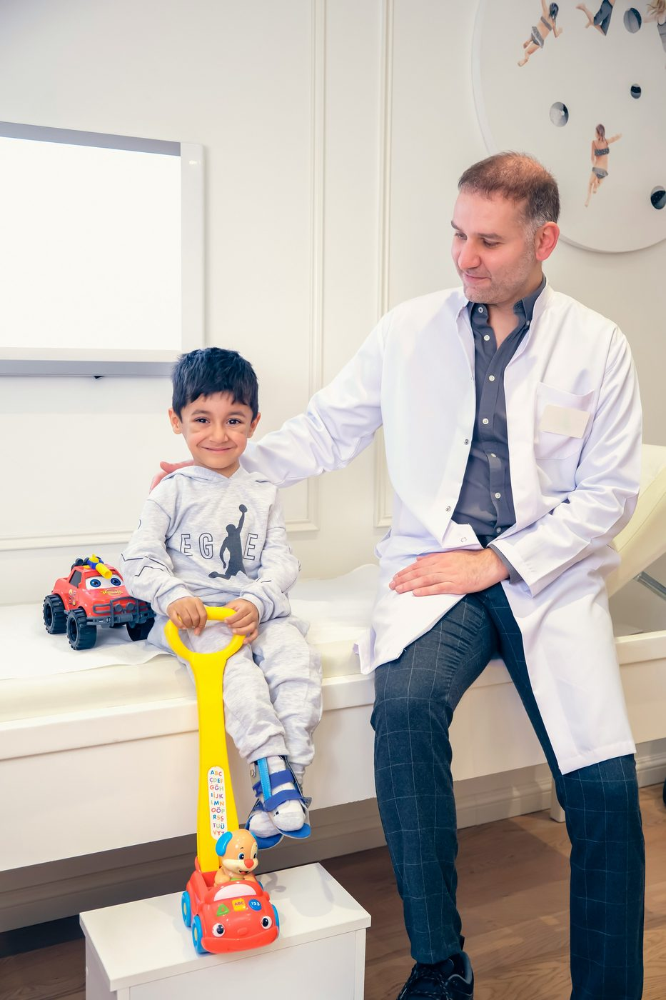

Before anything else. Call 911 or go to the nearest emergency department immediately for chest pain or pressure, difficulty breathing, sudden weakness, numbness, trouble speaking or vision changes, severe or uncontrolled bleeding, a serious injury, a severe allergic reaction, sudden severe headache, or thoughts of harming yourself. Simcoe Medical Clinic provides family and walk-in care. We are not an emergency facility.
The short version
- Your pharmacist can now assess and prescribe for 28 common conditions in Ontario, up from 19, following an expansion that took effect July 1, 2026.
- A walk-in clinic is right for new or unexpected problems that need an examination, a diagnosis, a prescription, or a referral.
- Health811 at 811 gives you a registered nurse on the phone, free, any hour of the day, when you are not sure.
- The emergency department is for serious injury and sudden severe illness. Lakeridge Health operates four in Durham Region.
- A family doctor is still the goal for anything ongoing.
Most people default to one of two extremes. Either they wait it out for weeks hoping something resolves on its own, or they spend an evening in an emergency waiting room for something a pharmacist could have handled in fifteen minutes.
Both cost you, and the second one costs everyone else too. The middle ground got considerably wider this month. Here is the current map.
Start here: the four levels of care
Your pharmacist
Common, well defined conditions on Ontario's minor ailments list, plus many routine vaccinations. No appointment, no referral, and the assessment itself is publicly funded for eligible patients.
Bring your Ontario health card. Ask for a minor ailment assessment.Walk-in or same day clinic appointment
Anything that needs an examination: infections, injuries, rashes that are not improving, persistent symptoms, prescriptions outside the pharmacist scope, sick notes, forms, and requisitions for lab work or imaging.
Walk-ins welcome at our clinic during opening hours. Booking reduces your wait.Health811, by phone or online
When you are genuinely unsure how serious something is. A registered nurse will talk it through with you and tell you where to go. Free, confidential, 24 hours a day, seven days a week.
Dial 811. Interpretation is available in many languages.Emergency department or 911
Serious injury, sudden severe illness, or any of the red flag symptoms listed at the top of this page. Do not wait, and do not drive yourself if you are seriously unwell.
Lakeridge Health has emergency departments in Oshawa, Ajax and Pickering, Bowmanville, and Port Perry.What your pharmacist can treat as of July 2026
Since 2023, Ontario pharmacists have been able to assess and prescribe for a defined list of minor ailments. On July 1, 2026, the province added nine more conditions, bringing the total list to 28. For eligible patients there is no charge for the assessment.
The nine conditions added this month:
These join conditions pharmacists have been managing since 2023, which include allergic rhinitis, mild acne, cold sores, pink eye, dermatitis and eczema, oral thrush, heartburn, hemorrhoids, impetigo, insect bites and hives, tick bites, menstrual pain, musculoskeletal sprains and strains, nausea and vomiting in pregnancy, diaper rash, pinworms and threadworms, uncomplicated urinary tract infections, and yeast infections.
Ontario also expanded the vaccines pharmacists can administer, adding publicly funded tetanus, whooping cough, diphtheria, respiratory syncytial virus, shingles and pneumococcal immunisations to what pharmacies already offer.
Two things to know. First, having the authority does not mean every pharmacy offers every service, so call ahead. Second, an assessment does not guarantee a prescription. If your symptoms fall outside the permitted scope, keep coming back, or carry more risk, the pharmacist will tell you to see a physician. That is the system working correctly, and shopping around at other pharmacies for a different answer is not a good idea.
When a walk-in clinic is the right call
A pharmacist works from a defined list. A physician or nurse practitioner can examine you, order tests, and diagnose things that are not on any list. Choose a walk-in visit when:
- The problem is new and you do not know what it is.
- You need someone to physically examine you: listen to your chest, look in an ear or throat, palpate an abdomen, assess a joint.
- You need bloodwork, a swab, or imaging. Only a physician or nurse practitioner can issue a requisition for diagnostic tests such as an ultrasound.
- A minor ailment treatment did not work, or symptoms are getting worse rather than better.
- You need a prescription renewal for an ongoing medication.
- You need a referral to a specialist.
- You have a fever with symptoms that are worsening, a wound that may need cleaning or closing, or a child who is unwell and you are not comfortable waiting.
Simcoe Medical Clinic welcomes walk-in patients during clinic hours, and booking an appointment simply reduces how long you wait. We are open Monday to Friday from 9:00 AM to 6:00 PM and Saturday from 10:00 AM to 4:00 PM, with free patient parking on site at 115 Simcoe Street South.
Where to go, symptom by symptom
This table covers the situations we are asked about most. When in doubt, call 811 and let a nurse help you decide.
Scroll sideways to see the full table.
| Situation | Start with | Why |
|---|---|---|
| Suspected urinary tract infection, uncomplicated | Pharmacist | On the minor ailments list. Fast assessment and treatment without an appointment. |
| Seasonal allergies, cold sores, pink eye | Pharmacist | All covered by pharmacist prescribing in Ontario. |
| Head lice, ringworm, warts, dandruff | Pharmacist | Newly added to the list on July 1, 2026. |
| Sore throat with fever that is not improving | Walk-in | Needs examination and possibly a swab. |
| Persistent cough lasting more than two to three weeks | Walk-in or family doctor | Needs a chest examination and possibly imaging. |
| Joint pain that has lasted weeks | Walk-in or family doctor | May need a requisition for ultrasound or an X-ray. |
| Prescription renewal for a long term medication | Family doctor, or walk-in if unattached | Ongoing medication should be reviewed, not simply repeated. |
| Child with a fever who is drinking, alert and settling | Pharmacist advice or walk-in | Reassess if the fever persists or behaviour changes. |
| Child who is drowsy, floppy, not drinking, or hard to rouse | Emergency department | These are red flags in children at any age. |
| Cut that will not stop bleeding, or a possible broken bone | Emergency department | May need closure, imaging, or reduction. |
| Chest pain, stroke symptoms, severe breathlessness | Call 911 | Time critical. Do not drive yourself. |
Using the emergency department well
Lakeridge Health operates emergency departments at its Oshawa, Ajax and Pickering, Bowmanville, and Port Perry hospitals, open 24 hours. When you arrive you are seen first by a triage nurse who assesses how urgent your problem is. That is why someone who arrived after you may be taken in before you: triage runs on severity, not on order of arrival.
If you do need to go, bring your health card, a list of your medications and allergies, and emergency contact information. Lakeridge Health publishes emergency department wait times online, which is worth checking before you leave the house if your situation is not urgent.
Emergency departments in Durham Region are busy. Every visit that could have been handled by a pharmacist or a walk-in clinic makes the wait longer for someone having a heart attack. Choosing correctly is a small act of community.
The long term answer is a family doctor
Every option above is designed for a moment. A family doctor is designed for a lifetime. Someone who has your full history knows when a symptom is new and when it is the third time this year, keeps your screening and vaccinations on schedule, manages chronic conditions like diabetes, blood pressure, asthma and thyroid disease over time, and coordinates the specialists you may need.
If you do not have one yet, read our guide on how to find a family doctor in Oshawa and Durham Region, and register with Health Care Connect while you keep looking. We are accepting new patients now.
Common questions
No. We welcome walk-in patients during clinic hours. Booking an appointment is recommended because it reduces your wait, but it is not required.
For eligible patients with a valid Ontario health card, the minor ailment assessment is publicly funded and there is no cost to you for the assessment. If a medication is prescribed, normal drug coverage rules apply to the medication itself.
No. Requisitions for laboratory tests and diagnostic imaging come from a physician or nurse practitioner. If you need bloodwork or an ultrasound, a walk-in visit or an appointment with your family doctor is the right step.
See a physician or nurse practitioner. Recurring symptoms, or symptoms that do not improve with treatment, are exactly the situations the minor ailments program is not designed for.
Your health card, a list of your current medications and doses, any known allergies, and a short note of your symptoms and how long they have been going on. If you have recent test results, bring copies.
You can ask, and we will accommodate where the schedule allows. For booked appointments you can choose a male or female physician directly through our online booking.
Yes. Oshawa People Pharmacy is inside the clinic, so you can fill a prescription immediately after your appointment without a second trip.
This article is general information for Ontario residents and does not replace medical advice. Scope of practice rules, funded services and eligibility can change, and not every pharmacy provides every service. Confirm current details with Health811 at 811 or at ontario.ca. For medical emergencies, call 911 or visit the nearest emergency department.